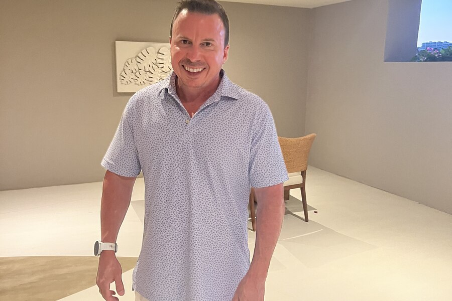

Craig Levinson spent twenty-five years building a career inside enterprise biotechnology before founding Velocity Performance and Wellness, an appointment-based practice in Carmel, Indiana. The move looks unusual from the outside. From the inside, it is the same career, applied to a new problem.
Levinson's professional history runs through some of the most established names in life sciences: leadership roles at Cytiva (formerly GE Healthcare Life Sciences), Sigma-Aldrich, Waters Corporation, and Packard Bioscience. Across those organizations, he managed complex strategic sales, built high-performing teams, and oversaw multimillion-dollar portfolios in an industry where every claim needs evidence behind it.
Why a Biotech Executive Starts a Wellness Practice
The founding of Velocity Performance and Wellness is best read as a continuation of that career rather than a break from it. Craig did not come to wellness through fitness culture or consumer marketing. He came from an industry built on measurement and rigor, and he brought that orientation with him.
That background shows up directly in how Velocity operates. The practice is appointment-based, technology-driven, and diagnostics-informed, structural choices that mirror the discipline Levinson developed managing enterprise accounts rather than habits borrowed from the wellness industry.
Translation, Not Transformation
The core narrative behind Velocity is credibility through translation. Every service the practice offers, from diagnostics to recovery technology, is filtered through the same evidentiary standard Levinson once applied to life-science portfolios. His background in enterprise biotechnology is not a footnote to the business; it is the reason the business is structured the way it is.
That standard also shapes what Velocity avoids. Where much of the wellness industry relies on trend-driven programming, Levinson's approach is to test, measure, and adjust, treating each client's plan the way he once treated a data set: worth trusting only once it is verified.
Rooted in Carmel, Built for Professionals
Velocity Performance and Wellness is based in Carmel, Indiana, and serves professionals across the Indianapolis metro area who want measurable outcomes without an open-ended time commitment. The appointment-based model reflects that audience directly: efficient, structured, and built around a client's schedule rather than a generic program.
Levinson's approach to what that structure produces, particularly around recovery and long-term performance, is explored further in Velocity's use of performance technology, which looks at how the practice translates diagnostics into a client's day-to-day plan.
Conclusion
Craig Levinson's twenty-five years in biotechnology were never separate from what he eventually built in Carmel. Velocity Performance and Wellness is what happens when a career spent proving claims with data is turned toward a person's own health, appointment by appointment.